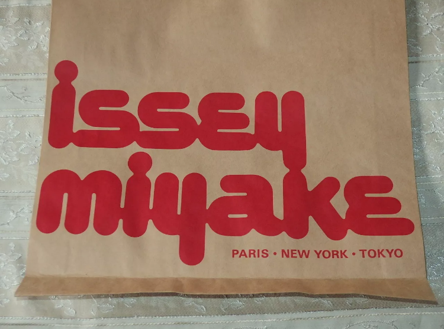

Flatter shapes and tighter joins instead of the bubbly Modak header.All three use Quicksand for the app and buttons, while preserving the green screen’s original monospaced lettering.

Thick continuous strokes, narrow gaps, slight slant.
Lower, wider and upright, with heavier joins.
More open counters and cleaner rounded letters.

Header options are previews only. A and B are original vector lettering studies; C uses a tighter Bagel Fat One treatment. Existing previews are preserved.Open the interactive sticker sheet ↗ · Sticker-sheet image ↗